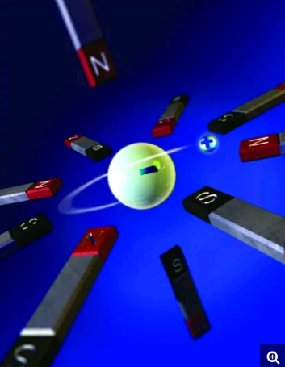

DEVELOPED BY ROBERT ZULU THE PROFESSIONAL PROGRAMMER
ANTIMATTER

The most obvious definition: a substance that occupies
space and has mass is defined as matter.
Everything around us is matter, whether it the
microscopic amoebas in every lake and pond across the
world. If it can be weight then it is matter.
So, is antimatter like a protest
campaign against matter? Definitely not. It's far more
strange that.
WHAT IS ANTIMATTER?
Antimatter is material that has the same composition as matter,
but with an opposite charge and spin. These materials are
made up of anti-particles (the opposite of particles in
terms of charge and spin).
So, basically, matter and antimatter are identical to each
other, but with an opposite charge and spin.
Similarly, if matter is the positive part, then antimatter will be negative
and vice versa.
Matter contains electrons, whereas
antimatter contains positrons, which are
similar to electrons, but possess an opposite charge.
If matter and antimatter meet, it immediately leads to
annihilation, thus releasing lots of energy.
WHERE IS IT?
Antimatter particles are created in ultra high-speed collisions. In the first moments after the Big Bang, only energy existed.as the universe cooled and expanded, particles of both matter and antimatter were produced in equal amounts. Why matter came to dominate is a question that scientists have yet to discover.
One theory suggests that more normal matter was created than antimatter in the beginning, so that even after mutual annihilation there was enough normal matter left to form stars galaxies and us.